При прохождении Террарии многие игроки могут запутаться в том, куда им следует идти и что они должны делать дальше. Террария является игрой с открытым миром: вас не заставляют никуда идти или что-то делать. Вы вольны устанавливать свои собственные цели и следовать им, независимо от того, являетесь ли вы строителем, бойцом, исследователем, коллекционером или кем-то ещё. Это пошаговое руководство просто направлено на то, чтобы обеспечить логический порядок прогрессии через множество различных биомов Террарии, как правило, в порядке возрастания сложности. Это рекомендуется, но, конечно же, нет необходимости посещать каждый биом, или следовать порядку, если вы этого не хотите.
Если вы не уверены в том, какой размер карты выбрать для нового игрока, выберите маленький. Даже в маленьком мире игрок может столкнуться с длительными путешествиями, и всё равно потребуется сотни часов, чтобы исследовать каждую пещеру в маленьком мире в нормальном темпе.
Начало.
При создании нового мира появится полезный НИП (НеИгровой Персонаж), и его называют 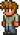Гидом. Если вы новичок в Террарии, то пообщайтесь с ним, и он даст вам советы по различным элементам вашего мира. Однако по мере вашего прогресса его советы становятся все менее полезными, потому что вы либо уже знаете, либо уже выполнили его советы. Тем не менее, это всё ещё хорошая идея позволить ему остаться, потому что вам понадобится Гид, чтобы призвать Стену Плоти.
Ваша цель в светлое время суток должна состоять в том, чтобы снабдить себя некоторым более хорошим начальным снаряжением из вашего окружения и найти источник укрытия, предпочтительно под землей, чтобы переждать ночь.
Первое, что вы должны сделать, это срубить несколько деревьев (используя свой 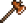Медный Топор, цельтесь в самый нижний блок, в этом вам может помочь смарт-курсор, который активируется на ctrl), так как дерево нужно для многих вещей, а затем построить 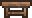Верстак. Благодаря нему создайте Деревянный меч и, возможно, 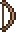Деревянный лук, так как ваше начальное оружие почти бесполезно.
Затем вы должны исследовать своё окружение. Обычно на поверхности рядом с вашей отправной точкой есть несколько 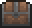Сундуков и 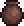Горшков, которые часто содержат полезное оружие и другие предметы. Если вам повезёт (шанс 9 % на сундук), вы найдете Копьё, которое является одним из лучших начальных видов оружия, особенно против Зомби, самой большой угрозы на данный момент. Если вы сможете найти достаточно Паутины рядом с поверхностью (вам понадобится 20), вы также можете сделать 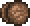Деревянное йо-йо, который является непопулярным, но надёжным начальным оружием. Кроме того, почти всегда есть по крайней мере один вход в пещеру, ведущий в Подземелье. Используйте 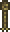Верёвки и 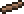Платформы, чтобы достичь высоких уступов, пропастей моста и безопасно спуститься. Всегда носите с собой блоки, чтобы вы могли безопасно спускаться!
После того, как вы изучили свое окружение, вскрыли все сундуки и сломали все горшки в поле зрения, вам следует отправиться в Подземелье до наступления ночи, чтобы продолжить поиск полезных предметов и ресурсов.
Ночь.
Начинающим игрокам стоит оставаться внутри убежища в ночное время. При достаточной изворотливости вы сможете заработать немного денег, убивая противников, но постарайтесь не уходить далеко от дома.
Чуть позже может произойти событие, называемое Кровавой луной, во время которого увеличивается скорость появления противников. Неопытным или плохо экипированным игрокам рекомендуется оставаться в помещении и забаррикадировать все входы так как в это время зомби могут открывать двери.
Постройка базы
После завершения постройки временного жилья стоит задуматься над строительством полноценного дома. Строительство такого дома может занять от одного игрового дня до игровой недели, в зависимости от вкусов и возможностей игрока. После исследования поверхности и пещер (выше подземелья) у вас останется огромный запас побочных ресурсов, таких как камень, песок, дерево, которые можно использовать для постройки дома. По мере необходимости достраивайте свой дом, добавляя к нему комнаты для гида, торговца, медсестры, а также мастерские и кладовые, где будете создавать и хранить нужные вам вещи.
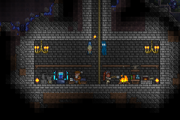
Типичная база
Исследование поверхности
На поверхности можно найти немного железных и медных месторождений, что может быть весьма полезно, если вы ещё не начали заниматься шахтёрством. Но не следует сразу крафтить броню, так как эти металлы могут пригодиться для более важных вещей. Иногда в мире генерируются длинные и зигзаговые спуски вниз — это пещеры. Внутри пещер вам могут встретиться сундуки в которых лежат полезные предметы. Эти сундуки появляются в любом биоме поверхности. Сундук можно взять с собой при помощи кирки и поставить у себя дома, но только при условии что сундук пустой. В уровень подземелья лучше пока не спускаться, ведь вы можете пропустить много чего интересного на поверхности.
Есть вероятность, что в мире есть Пирамида, тогда кроме ингредиентов для зелий можно найти сокровища пирамиды. Противники в пустыне не сильные и могут быть побеждены персонажами с железным снаряжением или лучше.
После того как вы полностью исследуете леса, сделаете деревянные инструменты и броню, вы можете отправиться дальше. Чаще всего за лесом идут пустыни. Они не представляют особой опасности. Здесь в основном спавнятся 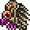стервятники и, изредка, 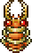муравьиные львы. Для сражения с ними подойдут обычные деревянные меч и лук. Здесь всегда растут кактусы и воднолисты. Также после того, как вы добудете много кактуса, сделайте кактусовые кирку, меч и броню. С ними вы станете сильнее. Ну и напоследок вы можете добыть песка, чтобы сделать строительные материалы, в том числе и стекло.
Этот биом встречается на одном из краев мира. Он содержит много воды, терний и опасных противников. Но не стоит волноваться. Даже при кактусовой броне можно вполне легко исследовать надземные джунгли. Из противников не выпадает ничего уникального. Здесь можно найти очень полезный луноцвет, из которого крафтятся полезные зелья.
Искажение является непростым для освоения биомом из-за Пожирателей Душ, однако изучение искажения может быть полезным. После разрушения Теневой сферы есть вероятность падения метеорита, а разрушение трех Теневых сфер вызовет Пожирателя миров. Также в этом биоме можно найти небольшое количество демонита, добыть который можно с помощью золотой кирки.
Во время дождя немного темнеет, золотые рыбки начинают выходить из водоёмов. Не стоит ходить далеко в это время.
Подземелье
После того, как вы построили свой дом, можно начинать добычу различных полезных ископаемых под землей. Существует несколько способов добычи, у каждого из которых есть свои преимущества и недостатки. Одним из таких способов является исследование пещер и туннелей, которые генерируются случайным образом. Когда игрок достигает тупика в такой пещере, он может попытаться найти другие пещеры с помощью света от факелов или других инструментов. Но при таком способе исследования подземелья игрок может столкнуться с ситуацией, когда выход из такого лабиринта пройденных пещер будет очень не удобным, так что можно использовать другой метод, заключающийся в рытье вертикальных шахт, которые дадут быстрый доступ поверхности. Совмещая эти два способа можно быстро и эффективно исследовать подземелье.
Начало подземелья можно определить по фону. Это первый слой под поверхностью. В этом слое можно найти достаточно много меди и железа, немного реже — серебро и золото. В этом слое редко, но могут быть светящиеся грибы.
Игрок должен сосредоточиться на поиске меди и железа в этом слое. Рекомендуется иметь железная броню и оружие из серебра, прежде чем перейти к следующему слою. Если вам повезет, то вы сможете найти два-три кристалла жизни.
Когда игрок достигает уровня пещеры, желательно иметь как минимум четыре жилых помещения в вашем доме, что позволит прийти подрывнику, как только у вас появится взрывчатка. При желании можно купить каску шахтера, которая очень помогает на начальном этапе исследования подземелий. Если вам посчастливилось найти светящиеся грибы, то от покупки каски можно вовсе отказаться и использовать зелье света.
Биом: Пещера
Противники: Черный слизень, Мать слизней, Слизень-детёныш, Розовый слизень, Гигантский червь, Скелет, Пещерная летучая мышь, Медузы, Пиранья, Мертвый шахтер, Тим
Предметы с противников: Гель, Подушка-пердушка, Крюк, Шляпа колдуна, Шапка робота
В сундуках: Браслет восстановления, Магическое зеркало, Статуя ангела, Облако в банке, Сапоги Гермеса, Заколдованный бумеранг, Шутовская стрела
Рекомендуемое снаряжение: Железная броня
Рекомендуемое здоровье: 8 сердец (160 здоровья)
Подземелье можно определить по фону. Это второй слой под поверхностью. В этом слое можно найти много меди, железа, серебра и золота, и с маленькой долей вероятности могут встретится светящиеся грибы.
В этом слое игрок должен сосредоточиться на получении серебряного и золотого оборудования. Не лишним будет попытаться найти крюк для кошки и столько кристаллов жизни, сколько получится, желательно три или четыре. Не стоит рисковать и добывать ресурсы в этом слое, если у вас ещё нет железного оборудования. Независимо от того, какое оборудование у вас сейчас есть, рекомендуется иметь при себе немного различных зелий, таких как зелье железной кожи и зелье света.
Избегайте слишком глубокого погружения на начальном этапе развития. Следующий слой после пещер — Преисподняя, которая является сложнейшим биомом обычной Террарии.
Освоение краёв мира
Как только игрок получает полное золотое оборудование, многие биомы среднего уровня откроются. Эти биомы содержат ингредиенты для алхимии и сокровища. В это время в доме должно быть, по меньшей мере, десять помещений для НПС.
Океан интересен ингредиентами для алхимии, сундуками и красителями, редким дропом (1 %) является Пиратская карта. Сундуки, найденные в океане, содержат уникальные сокровища. У новых персонажей могут возникнуть трудности в этом биоме. Не имея доступа к Воднолисту, найти источник воздуха может быть непросто.
Биом: Парящие острова
Противники: Гарпия
Предметы с противников: Перо, Большое перо гарпии
Ресурсы: Серебро, золото
В сундуках: Блестящий красный Шарик, Звёздная ярость, Счастливая подкова
Рекомендуемое снаряжение: Золотая броня, Зелье железной кожи
Рекомендуемое здоровье: 10 сердец (200 здоровья)
На парящих островах можно найти золотую и серебряную руды (либо платиновую и вольфрамовую), а также небесные сундуки. Острова охраняются гарпиями. С гарпиями непросто бороться даже опытным игрокам.
Теневые сферы
После того как вы добыли большое количество ресурсов в пещерах и океане вам стоит отправиться в порчу либо багрянец. Там вы сможете добыть теневые сферы либо серца. Для их добычи вам понадобятся бомбы, чтобы пробиться через эбонит/багряный камень. После их разрушения с шансом 50 % упадет метеорит.
Метеоритные головы будут постоянно появляться, если в этом районе есть 50 или более блоков метеорита, поэтому рекомендуется вести быструю добычу, для которой лучше всего подходит динамит.
Боссы
Глаз Ктулху
Как только игрок получает десять и более сердец, вполне вероятно, что ему придётся бороться с Глазом Ктулху.
Глаз Ктулху имеет шанс (1:3) появиться в любую ночь, если:
Глаз Ктулху не был побежден в нынешнем мире;
По крайней мере, один игрок в мире имеет десять или больше сердец;
К вам поселились четыре НПС.
Если игрок отвечает всем трем из этих требований, он должен быть готовым к борьбе с Глазом Ктулху. Купите стопку Сюрикенов у торговца. Соберите арену. Многие игроки предпочитают вызвать Глаз Ктулху до этих требований, с тем чтобы бороться с боссом собственными методами. Чтобы вызвать Глаз Ктулху, создайте подозрительный глаз и используйте его ночью.
Рекомендуемое снаряжение: Золотая броня, пронзающее оружие (Копья, Цепи и т. п.), Зелье охотника, Зелье железной кожи, Зелье регенерации
Рекомендуемое здоровье: 10 сердец (200 здоровья)
Пронзающее оружие является наиболее эффективными против Глаза Ктулху, так как оно может ранить его несколько раз при каждой атаке. Холодное оружие не очень эффективно против босса, поскольку он обычно летает вне его досягаемости. На первом этапе, Глаз Ктулху создаёт Слуг, атакующих игрока. Когда у Глаза Ктулху будет меньше 1400 единиц здоровья, он перейдёт во вторую фазу. Во второй фазе, Глаз Ктулху создание Слуг прекратится, а защита глаза уменьшится, однако он начнёт двигаться намного быстрее и наносить больше урона. Для игрока в золотой броне и с большим количеством зелий Глаз Ктулху не должен представлять серьёзной угрозы.
Пожиратель миров
После победы над Глазом Ктулху, игрок должен бороться с Пожирателем миров.
Пожиратель миров будет появляться при уничтожении каждой третьей теневой сферы в мире. Возможно также призвать Пожирателя миров с помощью Пищи для червя.
Босс: Пожиратель миров
Здоровье: 65 (Голова), 150 (Тело), 220 (Хвост)
Атака: 22 (Голова), 13 (Тело), 11 (Хвост)
Защита: 2 (Голова), 4 (Тело), 8 (Хвост)
Выпадают: Демонит, Теневая чешуйка
Рекомендуемое снаряжение: Золотая броня, пронзающее оружие (Копья, Цепи и т. п.), Зелье охотника, Зелье железной кожи
Рекомендуемое здоровье: 12 сердец (240 здоровья)
Пожиратель миров имеет 50 сегментов. Пронзающее и холодное оружие являются очень эффективным против этого босса. Из-за противников, обитающих в порче разумно будет построить арену для борьбы с Пожирателем миров.
Данж
После получения теневого и метеоритного оборудования, игрок должен исследовать Данж. Данж можно найти возле правого или левого края карты. Чтобы получить вход в подземелье, нужно победить Скелетрона. Чтобы его вызвать, поговорите со стариком перед данжем в ночное время.
Босс: Скелетрон
Здоровье: 4400 (Голова), 600 (Рука)
Атака: 32 (Голова), 32 (Рука)
Защита: 10 (Голова), 10 (Рука)
Рекомендуемое снаряжение: Теневые доспехи или Метеоритные доспехи, пронзающее оружие (Копья, Цепи и т. п.), Зелье охотника
Рекомендуемое здоровье: 15 сердец (300 здоровья)
Как и против остальных боссов, пронзающее оружие очень эффективно против Скелетрона. Холодное оружие имеет ограниченную эффективность, так как Скелетрон парит в воздухе большую часть времени. Как и против других боссов, у игрока с большим запасом зелья не должно быть слишком много проблем с этим боссом.
После победы над Скелетроном, игроки могут войти в темницу беспрепятственно.
Биом: Данж
Противники: Злой скелет, Большой скелет, Маленький скелет, Огненное колесо, Проклятый череп, Тёмный колдун, Шипастый шар, Слизень из темницы
Предметы с противников: Кость, Золотой ключ, Костяной жезл
Известные ресурсы: Фонарик, Водяная свеча, Книга, Хрустальное сердце, Шип
Рекомендуемое снаряжение: Теневые доспехи или Метеоритные доспехи
Рекомендуемое здоровье: 15 сердец (300 здоровья)
Противники возрождаются очень быстро в подземелье, так что это может быть трудно для передвижения. Предметы для передвижения, такие как Крюк-кошка или Облако в банке, настоятельно рекомендуются. Многие из поверхностей темницы покрыты шипами, наносящие повреждения, что затрудняет прогресс без какой-то помощи движению.
Рекомендуется взять все сокровища в подземелье, так как все они полезны для дальнейшего прогресса. Водяную свечу можно найти на книжных полках (на скриншоте). Темница имеет значительное количество хрустальных сердец, что делает его легким для игроков, чтобы достичь максимального срока к тому времени, когда они закончили исследовать темницу. Также обратите внимание, что сундуки на парящих островах закрыты, и для их открытия нужны золотые ключи, полученные в темнице, поэтому после завершения желательно держать по крайней мере три ключа.
Преисподняя
После изучения подземных джунглей, игроку предстоит отправиться в преисподнюю, покрывающую всю нижнюю часть карты. Это достигается путем рытья вниз от пещер.
Предметы с противников: Шляпа водопроводчика, Демоническая коса, Кукла Вуду
Известные ресурсы: Адский камень, Огнецвет, Адская кузня, Демонический факел
В сундуках: Темное копье, Огненный цветок, Солнечная ярость, Огнеплеть
Рекомендуемое снаряжение: Теневые доспехи, Метеоритные доспехи, Доспехи джунглей или Некроброня; оружие из Темницы или Джунглей; Обсидиановый череп
Рекомендуемое здоровье: 20 сердец (400 здоровья)
Преисподняя в настоящее время самый сложный биом в обычной Террарии. Это может быть очень сложным для изучения, даже с лучшим оборудованием в игре. Обсидиановый череп имеет важное значение, так как из-за адского камня игрок будет гореть так же, как и от метеорита.
Лучшие вещи в игре можно найти или изготовлить из предметов, обнаруженных в этом биоме. Игрок должен попытаться найти теневые сундуки, открывающиеся с помощью теневого ключа. Эти сундуки содержат одни из лучших оружий в игре.
В настоящее время, исследование преисподнии — это последнее, что нужно делать в Террарии до активации Сложного режима. Не существует пути назад, ведь Сложный режим инициируется как особый мир — поэтому убедитесь, что вы удовлетворены текущим оборудованием и другими вещами, прежде чем начинать переход в Сложный режим.
Переход в Сложный режим
Сложный режим вводит некоторые новые аспекты в ваш мир и повышает сложность, чем затрудняет выживание. Для перехода надо победить Стену плоти, владыку преисподней.
Босс: Стена Плоти
Здоровье: 8000 (Глаза и рот), 320 (Голодные)
Атака: 11-15 лазер (зависит от здоровья), 50 ближний бой (Глаза и рот), 30-75 — Голодные (в зависимости от здоровья)
Защита: 12 (Глаза и рот), 10-40 — Голодные (в зависимости от здоровья)
Рекомендуемое снаряжение: Теневые доспехи или Литые доспехи, оружие дальнего боя, такое как Бластер феникса, Сапоги Гермеса
Рекомендуемое здоровье: 20 сердец (400 здоровья)
Чтобы вызвать Стену, необходимо кинуть Куклу Вуду, выпадающую из Демона Вуду, в лаву в Преисподней. Он появится только за пределами экрана в направлении, ближайшей к границе карты. Из-за способности босса «Язык» и Голодных в небольших расстояниях, дальнобойное оружие является жизненно важным. Огнестрельное оружие, Копья, или Магическое оружие рекомендуется. Также важно иметь подготовленную арену для Стены плоти, являющийся длинным прямым путём через Преисподнюю длиной в зависимости от времени. Игрок может победить босса, только Голодные должны быть убиты, прежде чем сама Стена.
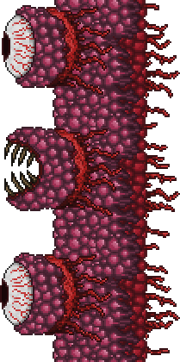
Стена Плоти
Как только вы победили, то получите сообщение, которое говорит, что «древние духи Света и Тьмы были освобождены.» Вы уже вошли в Сложный режим.
Сложный режим
Сложный режим вводит новые аспекты в ваш мир и делает ваше выживание более трудным. Некоторые из ключевых изменений в Сложном режиме являются:
Совершенно новый биом — освящение (и сопутствующее подземное освящение)
Новые противники сильнее во многих существующих биомах (примечание: лес, снег, место падения метеора, океан, подземелья, джунгли, подземные джунгли, и преисподняя — биомы остающиеся неизменными).
Новые 3 босса, похожие на свои оригиналы
Освящение и порча создаются в виде двух прямых линий, исходящих из места, где игрок победил Стену.
Новые блоки и предметы, в том числе в магазинах NPC
Порча и освящение может распространяться через камень, песок и траву (но не друг с другом), и могут конвертировать блоки до трех квадратов. Кроме того, порча может переделать грязь в Джунглях в землю, но освящение этого не может. Подсолнух не может сдерживать порчу, которая будет его уничтожать.
Краткий обзор по сдерживанию освящения/порчи (далее о/п):
Практическим следствием вхождения в Сложный режим в том, что освящение и порча быстро распространяются и редко потребуются крайние меры при их покрывании большей части вашего мира. Это потому, что подземные слои в основном состоят из камня, через который о/п проходят быстро, и V-полосы — первоначальные места, из которых проходят от верхней к нижней части карты. Обратите внимание, что это не очень плохо, так как есть много предметов, которые есть в о/п.
Если вы хотите содержать о/п, копание вала на 3 блока в ширину эффективно останавливает ход в подземелье. Есть несколько предостережений: выше 0 фт, о/п может распространяться более чем на 3 блока от лиан/шипов, плевки разлагающих создает новую порчу в любое время при попадании на блоки, которые могут быть порчей, и разрушение демонических алтарей может преобразовать любой случайный блок в мире о/п в обход карантина.
Ниже 0 фт, даже земля и грязь действует как барьер для порчи/освящения, так как трава не растет под землей. К барьерным блокам не относятся камень и песок, через которые могут распространяться них.
Темница обычно выступает в качестве большого естественного барьера, так как она простирается от поверхности вокруг начала ад (снежный биом является ещё одним эффективным буфером поверхность).
Если Вы хотите «спасти джунгли», имение у биома границы с освящением является очень хорошей идеей, ведь только порча может конвертировать джунгли.
Новые и изменёные биомы Сложного режима
Биом: Ночь (Сложный режим)
Новый противники: Одержимые доспехи, Блуждающий глаз, Призрак, Клоун (только в Кровавую луну), Оборотень (только в полнолуние)
Предметы с противников: Зачарованная луна
Рекомендуемое снаряжение: Литые доспехи
Эта ночь будет нелёгкой.
Биом: Пустыня (Сложный режим)
Новые противники: Мумия, или Тёмная мумия и враги порчи (пустыня порчи), или Светлая мумия и враги освящения (пустыня освящения)
Предметы с противников: Осколок Тьмы (пустыня порчи) или Осколок Света (пустыня освящения)
Рекомендуемое снаряжение: Литые доспехи
Природные пустыни обычно долго не существуют в Сложном режиме. Когда они опорчиваются или освящаются, они становятся очень похожи на соответствующие биомы.
Биом: Порча (Сложный режим)
Новые противники: Разлагающий, Слизнер, Темная мумия (в пустыне)
Рекомендуемое снаряжение: Литые доспехи или лучше, Кошмарная кирка или лучше
Разлагающие ведут дальные и гораздо более мощные атаки, что делает биом трудным местом для проживания. Порча в настоящее время также распространяется через почти все с относительно большой скоростью.
Биом: Освящение
Противники: Пикси, Единорог, Брюхоногий, Святая мумия (в пустыне)
Предметы с противников: Пыль пикси, Рог Единорога, Осколок Света
Рекомендуемое снаряжение: Литые доспехи или лучше
Освящение генерируется, когда игрок входит в Сложный режим. Это биом — один из трудных биомов поверхности.
Биом: Парящие острова (Сложный режим)
Новые противники: Виверна
Предметы с противников: Эссенция полёта
Рекомендуемое снаряжение: минимум Литые доспехи, рекомендуется Мифриловая броня или лучше, Демоническая коса, Арбалет и/или Заводная штурмовая винтовка
Рекомендуемые баффы: Гравитация, Железная кожа, Регенерация, Сытость, Эль (ближний бой), Лучник (арбалет), Шип, Скорость
Основная причина, чтобы рисковать на парящих островах, чтобы заработать для себя Крылья, одни из лучших аксессуаров в игре. Вам нужно будет убивать Виверн, червь-дракон, который летает и делает много вреда, даже для хорошо оснащенных игроков.
Хотя Виверны могут быть убиты с использованием оборудования из адского камня опытным игроком, рекомендуется подождать до получения предметов Сложного режима, прежде чем вступать с ним в бой.
Как и против других червей, лучшем оружием являются те, которые наносят колющие повреждения, ярким примером этого является Демоническая коса. Одна из эффективных стратегий, если Зелье гравитации активно, может быть падание вниз, когда Виверна гонится за вами: так же, как вы можете стрелять вниз по всей длине его тела с пронизающими атаками. Повторите «падение» и червь-дракон быстро умрет.
Биом: Подземелье (Сложный режим)
Новые противники: Токсичный слизень, Гигантская летучая мышь, Землекоп, Одержимые доспехи
Предметы с противников: Эссенция полёта
Рекомендуемое снаряжение: Литые доспехи или лучше, Раскаленная кирка
Вы заметите, что новые противники делают подземелье довольно враждебным по сравнению с тем, что было раньше, перед Сложным режимом.
Биом: Пещеры (Сложный режим)
Новые противники: Бронированный скелет, Скелет-лучник, Гигантская летучая мышь, Землекоп
Рекомендуемое снаряжение: Литые доспехи или лучше, Раскаленная кирка
Вы заметите, что новые противники делают пещеры довольно враждебным по сравнению с тем, что было раньше, перед Сложным режимом.
Предметы с противников: Эссенция ночи, Проклятое пламя
Рекомендуемое снаряжение: минимум Литые доспехи, рекомендуется Мифриловая броня или лучше
Трудности возникают с подземной порчей, находящейся на одном уровне с подземным освящением, и в настоящее время связаны с тем, что это — самый трудный биом в Террарии.
Шахтёрство в Сложном режиме
Добыча новых руд Сложного режима (далее руд С.р.) является основным способом получения большей части лучших предметов Сложного режима.
Ваш первый шаг после входа в режим: вы должны сломать демонические алтари с помощью святого молота.
Но перед этим, вы можете убить Стену плоти ещё несколько раз, чтобы получить полезные вещи. Заводная штурмовая винтовка является вторым из лучших орудий (стрелящих пулями) в игре, немного хуже Мега-акулы. Получение соответствующей эмблемы для вашего стиля игры также рекомендуется.
Демонические алтари
Разрушение демонических алтарей создает руды С.р. в вашем мире.
При разрушении первой появится сообщение, что в мире появился Кобальт. При разрушении второй появится сообщение, что в мире появился Мифрил. При разрушении третей появится сообщение, что в мире появился Адамантит. После четвёртого разрушения начинается снова с кобальта.
Демонические алтари часто можно найти внутри пропастей порчи на глубине около 0 фт (там же, где вы найдете теневые сферы).
Каждый раз, когда вы ломаете демонический алтарь, есть шанс, что камень в мире может быть конвертирован в чёрный камень или жемчужный камень. Это, скорее всего может быть причиной создания новой пещеры порчи/освящения, при наличии достаточного времени.
Демонические алтари генерируют меньше новой руды по мере разрушений. На втором этапе алтари создают 1/2, меньше, чем на первом, третий этап создает 1/3 и так далее. К тому времени, как вы разбили 12-15 штук будет изобилие руд С.р. (на маленькой карте).
При разрушении демонических алтарей создаются 1-2 призрака, которые могут быть смертельно опасными для игроков с предметами из адского камня. Так как призраки могут парить только над землей, можно прикрепиться к стене или потолку и убить его.
Подземная порча опасна для игроков со снаряжением нормального режима, так что не рекомендуется оставаться на месте после разрушения алтаря.
Где добывать
Вы можете найти руды в порядке возрастания сложности: в подземных джунглях, пещерах и подземных порче/освящении.
Рекомендуется добывать в подземных порче/освящении (далее П.п./П.о.) если это возможно, поскольку Вы будете получать там полезные предметы. Это может быть довольно трудно, но возможно, с адско-каменным снаряжением.
Если вам слишком трудно добывать полезные блоки в П.п./П.о., подземные джунгли (далее П.д.) самые лёгкие и часто забываемые. Пещерные противники гораздо сложнее, но высокие темпы создания и осиные атаки на дальнем расстоянии могут преследовать все П.д..
Совет: проверьте выкопанные вами шахты, там часто могут появиться руды С.р.
Кобальт
Вы должны иметь литую кирку, чтобы добывать кобальт
Кобальт может быть найден примерно на уровне 0 фт — то есть подземелье и пещеры. Часто попадается (несколько демонических алтарей должны быть разбиты).
Создание кобальтового бура (15 кобальтовых слитков) должно стоять на первом месте.
Мифрил
После того, как вы создадите кобальтовый бур, вы можете начать добычу мифрила, находящегося на тех же глубинах, где и пещеры.
Создание мифриловой наковальни (из 10 мифриловых слитков), а затем мифрилового бура (из 15 мифриловых слитков) должно стоять на первом месте.
Адамантит
После того, как вы создадите мифриловый бур, вы можете начать добычу адамантита, находящегося там же, где и бассейны лавы.
Адамантит является лучшей рудой С.р., так что полезно сломать много демонических алтарей, прежде чем её искать.
Из-за того, что адамантит обычно находится в районе бассейнов лавы, потребуется зелье обсидиановой кожи и, возможно, не обойтись без зелья хождения по воде. По иронии судьбы, лава станет вашим лучшим другом, потому что будет держать вас в безопасности, пока вы погружены, особенно в П.п./П.о.. Также рекомендуется снаряжение для дайвинга. Зелье ночного зрения и зелье шахтера могут помочь вам легко обнаружить адамантит.
Создание адамантитовой печи (30 адамантитовой руды) должно стоять на первом месте.
Рекомендуемые предметы
Эти рекомендации понадобятся, если вы ещё не били любого из боссов Сложного режима.
Броня
Вы можете сделать себе адамантитовую броню вместо оборудования из адского камня, если вы останетесь в джунглях. Но если вы ведёте добычу в подземных порче/освящении, рекомендуется перейти на доспехи Сложного режима как можно быстрее.
Оружие
ближнего боя:
Грань ночи по-прежнему эффективна, если она у вас есть, но улучшенная световая сабля настоятельно рекомендуется, потому что она вторая из лучших мечей в игре, сопоставимый с Экскалибуром.
Также превосходны Dao of Pow или копья Сложного режима.
дальнего боя:
Заводная штурмовая винтовка является вторым лучшим оружием (стреляющим пулями) в игре, пока не получите Мега-акулу.
Арбалеты также превосходны, особенно против мобов, в комбинации со святыми стрелами.
магическое:
Магическое оружие немного слабее остальных, но лучшее из них Кристальный шторм, Лазерная винтовка, Демоническая коса и Ледяной жезл
Аксессуары
Общего назначения: Крылья или Обсидиановая подкова, Спектральные ботинки, Водолазное снаряжение, Обсидиановый щит, Золотой крестик, Звёздный плащ, Философский камень
Выпадают: 20-30 Эссенция могущества, 5-15 Большое лечебное зелье
Рекомендуемое снаряжение: минимум Литые доспехи, рекомендуется Адамантитовая броня, оружие ближнего и дальнего боя на свой вкус, к примеру световая сабля или Адамантиновый арбалет.
Баффы: Железная кожа, Регенерация, Сытость. Необязательные: Эль (ближняя атака), Лучник (арбалет), Гравитация, Шип, Скорость
Уничтожитель является улучшенной версией Пожирателя миров. Он вызывается с помощью механического червя ночью, но до того, как сражаться с Уничтожителем, вы должны сделать мифриловую наковальню, и вполне возможно победить в одиночку.
Уничтожитель является самым простым из трех боссов Сложного режима, а также самый востребованный (позволяет сделать Мега-акулу, возможно, самое лучшее оружие дальнего боя в игре), и поэтому с ним нужно бороться в первую очередь.
С Уничтожителем лучше всего бороться использовании оружия ближнего боя, но оружие дальнего боя также хорошо. Это видео показывает самый легкий и простой способ победить Уничтожителя.
В отличие от Пожирателя миров, Уничтожитель не распадается на куски, как вы убиваете одну его часть, он остается неизменным вплоть до того, как общее здоровье босса достигает 0. Как Уничтожитель получает повреждение, появляются Зонды и нападают на вас, оставляя сердца после смерти, помогающие вам остаться в живых.
Вам нужно убить Уничтожителя 4 раза, чтобы создать все предметы.
Атака(Спазматизм): 50 ближний бой/25 проклятое пламя (1 фаза), 75 ближний бой/30 огонь из глаза (2 фаза)
Выпадают: 20-30 Эссенция прозрения, 5-15 Большое лечебное зелье
Рекомендуемое снаряжение: Адамантитовая броня и лучше, Мега-акула с Кристальными пулями
Рекомендуемые аксессуары: Крылья, Спектральные ботинки, Ранговая эмблема, Золотой крестик, Философский камень, улучшения +4 к защите или +4 % к атаке
Баффы: Железная кожа, Регенерация, Скорость. Необязательные: Сытость, Гравитация, Шип
Близнецы являются улучшенной версией Глаза Ктулху. Они вызываются ночью с помощью механического глаза.
Ретиназер и Спазматизм являются отдельными противниками с собственным здоровьем, и могут быть убиты независимо друг от друга. Они будут трансформироваться во второй форму, когда их здоровье будет ниже половины (12000 здоровья)
Вообще-то это легче сосредоточиться на одном глазе: рекомендуется сначала убить Спазматизма, так как Ретиназер в первой форме не является очень опасным
Выпадают: 20-30 Эссенция ужаса, 5-15 Большое лечебное зелье
Рекомендуемое снаряжение: Адамантитовая броня и лучше, Мега-акула с Кристальными пулями, Адамантиновый арбалет, Звездная пушка
Рекомендуемые аксессуары: Крылья, Спектральные ботинки, Ранговая эмблема, Золотой крестик, Философский камень, улучшения +4 к защите или +4 % к атаке
Баффы: Железная кожа, Регенерация, Скорость. Необязательные: Сытость, Гравитация, Шип
Скелетрон Прайм является улучшенной версией Скелетрона. Он призывается ночью с помощью механического черепа.Внимание: если не победить Скелетрона прайма до начала дня, то он станет подобно Стражу из Темницы.
Битва с аналогична с Близнецами. Главное отличие в том, что вместо перехода в другую фазу, Прайм атакует вращением головой. За это время его защита повышается и он стремится защитить себя руками, поэтому имеет смысл перейти на большой вред/прокалывающие атаки с помощью арбалета (используются шутовские, проклятые или святые стрелы) или звездной пушки.
 Деревянный меч и, возможно, 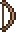Деревянный лук, так как ваше начальное оружие почти бесполезно.
Деревянный меч и, возможно, 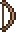Деревянный лук, так как ваше начальное оружие почти бесполезно.